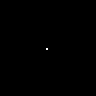
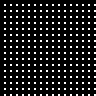
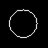

Timing methodology
Library gallery pages end with measurements generated by the same calls that produce their images and scalar results. Each distinct operator/input combination is warmed once, then measured up to three times. The gallery uses the first call's output; measurements never substitute a mock or a simplified kernel. Factories, loading fixtures, plotting and PNG encoding are outside the timer. Base.invokelatest is included because the image factories define methods at runtime. Program evaluation, casters, fallbacks and wrapper caches are separate costs; these tables measure successful operator calls.
The median and slowest observed sample are wall-clock times, including allocation and any garbage collection during the call. They are sensitive to CPU load. A slowest sample is not an upper bound on future calls or on other inputs. First-use compilation and scratch-buffer allocation can make the first call considerably slower than these warmed measurements. Allocations report bytes allocated, not peak memory or memory retained by scratch buffers.
For a local build with a busy computer:
MAGE_DOC_TIMING_SAMPLES=3 nice -n 15 julia --project=docs docs/make.jlThe docs environment must already have been instantiated with this checkout of MAGE developed into it. Keep Julia and BLAS thread counts low when sharing CPU resources. Set MAGE_DOC_TIMING_SAMPLES from 1 to 20 to change the sample count. Sampling stops after at least 0.1 seconds of measured work per case; this limits repeat work, and does not interrupt an individual operator.
Input dimensions and pixel storage are listed once in a legend on each page. For scalar plots, numeric calls of the same operator and arity are grouped: the argument ranges describe the sampled values, the median is the median of the individual case medians, and the maximum spans all observed samples. Image calls retain separate rows for each image and parameter combination. This keeps the full set of measurements readable without printing hundreds of nearly identical rows for every point in a curve.
Inputs that change the cost
| Family | Cases to inspect | Why |
|---|---|---|
| Connected components and blob/shape operators | empty, full, many isolated pixels, diagonal contacts, long thin objects | Run count, object count and bounding-box overlap change work and scratch memory. Foreground is usually 8-connected; a checkerboard alone is not a collection of isolated objects. |
| Per-object convex hulls | interleaved objects with overlapping large boxes | Each object's bounding box is scanned; total box area can exceed image area substantially. |
| Skeletons | large solid shapes, thick rings | Thinning makes repeated passes; thick objects can need more iterations. |
| Distance maps | empty and full masks, sparse and dense objects | Empty/full cases can take shortcuts. Normalisation and behaviour with no target pixels matter. |
| Filters and morphology | maximum window/radius, long narrow images, constant images | Kernel size, border work and repeated neighbourhood comparisons change cost. Normalising a flat response needs a defined output. |
| Template matching | textured image, larger template, repeated patterns, flat template | Correlation work depends on candidate count and template area. Flat templates exit early. Coarse-to-fine search can miss the global best match; neither broad nor repeated peaks guarantee an exact result. |
| Shift estimation | long row/column profiles and flat images | Profile correlation compares many lags: quadratic in the profile length, in addition to reading pixels. Flat profiles contain no motion evidence and return zero through a linear-time shortcut. |
| Graph descriptors | many components, nearly collinear centroids | Graph size, triangulation and centrality dominate; fewer than three non-collinear nodes give the documented fallback. |
| Graph cuts / GrabCut | noisy intensities, ambiguous seeds, maximum iterations | Cut topology and iterative appearance fitting affect time; one smooth fixture does not bound it. |
| Volumes | larger cubes, thin slabs, dense foreground and cavities | Voxel count grows cubically with side length. A 28³ phantom does not predict full-resolution CT cost. |
| Evolved numeric parameters | NaN, infinities, large finite values, endpoints | Sanitisation often clamps parameters or selects defaults; those branches deserve both correctness tests and measurement. |
Small stress gallery
The following bounded fixtures exercise shortcuts, fragmentation, thick shapes and unusual parameters. They deliberately stay small so building the manual on a loaded machine is practical. They are examples of expensive or degenerate cases, not an exhaustive search for the worst input.
g_gallery(page, entries; cols = 4, asset_prefix = g_asset_prefix(library_page = false))| empty | shape_fill_holes: empty | shape_convex_hull_objects: empty | shape_skeleton: empty |
|---|---|---|---|
 |  |  | |
| full | shape_fill_holes: full | shape_convex_hull_objects: full | shape_skeleton: full |
 |  |  | |
| isolated | shape_fill_holes: isolated | shape_convex_hull_objects: isolated | shape_skeleton: isolated |
 |  |  |  |
| thick ring | shape_fill_holes: thick ring | shape_convex_hull_objects: thick ring | shape_skeleton: thick ring |
 |  |
A full foreground has no background sample: shape_distance_inside returns ones by convention. An empty foreground returns zeros. The shape gallery and source docstrings describe the other output conventions.
Julia 1.13.2; znver3; 1 Julia thread(s); optimisation level 2.
Times are warmed wall-clock measurements of the actual calls above, including invokelatest and allocations. Loading, factory generation and image rendering are excluded. CPU load and garbage collection affect these values. The maximum is the slowest observed sample, not a worst-case bound.
| Input | Dimensions | Pixel storage |
|---|---|---|
| empty #1 | 48×48 | BinaryPixel{Bool} |
| full #2 | 48×48 | BinaryPixel{Bool} |
| isolated #3 | 48×48 | BinaryPixel{Bool} |
| thick ring #4 | 48×48 | BinaryPixel{Bool} |
| flat #5 | 48×48 | IntensityPixel{FixedPointNumbers.N0f8} |
| textured #6 | 48×48 | IntensityPixel{FixedPointNumbers.N0f8} |
Numeric-only plot calls of the same operator and arity are grouped: argument ranges cover the sampled values, the median is the median of the per-case medians, and the maximum covers every observed sample. Image calls keep a row for each input/parameter combination.
| Operator | Inputs | Output | Median (µs) | Observed max (µs) | Allocated bytes (median) | Cases / samples |
|---|---|---|---|---|---|---|
shape_fill_holes | empty #1 | 48×48, BinaryPixel{Bool} | 2.94 | 17.2 | 2408 | 1 / 3 |
shape_convex_hull_objects | empty #1 | 48×48, BinaryPixel{Bool} | 3.17 | 17.98 | 2728 | 1 / 3 |
shape_skeleton | empty #1 | 48×48, BinaryPixel{Bool} | 5.19 | 16.73 | 2408 | 1 / 3 |
shape_fill_holes | full #2 | 48×48, BinaryPixel{Bool} | 2.71 | 3.26 | 2408 | 1 / 3 |
shape_convex_hull_objects | full #2 | 48×48, BinaryPixel{Bool} | 8.47 | 9.6 | 3048 | 1 / 3 |
shape_skeleton | full #2 | 48×48, BinaryPixel{Bool} | 247.36 | 263.32 | 2408 | 1 / 3 |
shape_fill_holes | isolated #3 | 48×48, BinaryPixel{Bool} | 6.86 | 8.02 | 2408 | 1 / 3 |
shape_convex_hull_objects | isolated #3 | 48×48, BinaryPixel{Bool} | 25.96 | 26.68 | 23608 | 1 / 3 |
shape_skeleton | isolated #3 | 48×48, BinaryPixel{Bool} | 5.98 | 6.0 | 2408 | 1 / 3 |
shape_fill_holes | thick ring #4 | 48×48, BinaryPixel{Bool} | 4.5 | 5.81 | 2408 | 1 / 3 |
shape_convex_hull_objects | thick ring #4 | 48×48, BinaryPixel{Bool} | 9.16 | 11.8 | 3048 | 1 / 3 |
shape_skeleton | thick ring #4 | 48×48, BinaryPixel{Bool} | 90.58 | 118.3 | 2408 | 1 / 3 |
erosion_2D | flat #5; NaN | 48×48, IntensityPixel{FixedPointNumbers.N0f8} | 18.16 | 41.15 | 9112 | 1 / 3 |
erosion_2D | flat #5; Inf | 48×48, IntensityPixel{FixedPointNumbers.N0f8} | 18.26 | 18.31 | 9112 | 1 / 3 |
erosion_2D | flat #5; -Inf | 48×48, IntensityPixel{FixedPointNumbers.N0f8} | 15.52 | 15.98 | 9112 | 1 / 3 |
erosion_2D | flat #5; 1.0e30 | 48×48, IntensityPixel{FixedPointNumbers.N0f8} | 69.77 | 86.01 | 41904 | 1 / 3 |
erosion_2D | flat #5; 13.0 | 48×48, IntensityPixel{FixedPointNumbers.N0f8} | 71.41 | 71.9 | 41904 | 1 / 3 |
erosion_2D | textured #6; NaN | 48×48, IntensityPixel{FixedPointNumbers.N0f8} | 16.23 | 16.89 | 9112 | 1 / 3 |
erosion_2D | textured #6; Inf | 48×48, IntensityPixel{FixedPointNumbers.N0f8} | 16.38 | 18.26 | 9112 | 1 / 3 |
erosion_2D | textured #6; -Inf | 48×48, IntensityPixel{FixedPointNumbers.N0f8} | 15.97 | 17.91 | 9112 | 1 / 3 |
erosion_2D | textured #6; 1.0e30 | 48×48, IntensityPixel{FixedPointNumbers.N0f8} | 28.01 | 28.11 | 41904 | 1 / 3 |
erosion_2D | textured #6; 13.0 | 48×48, IntensityPixel{FixedPointNumbers.N0f8} | 63.64 | 66.13 | 41904 | 1 / 3 |
sim_shift_x | flat #5; flat #5 | Float64 | 1.22 | 5.5 | 1040 | 1 / 3 |
match_score_30p | flat #5; flat #5 | Float64 | 1.05 | 4.13 | 3440 | 1 / 3 |
sim_shift_x | textured #6; textured #6 | Float64 | 2.36 | 3.26 | 2000 | 1 / 3 |
match_score_30p | textured #6; textured #6 | Float64 | 147.68 | 164.04 | 3440 | 1 / 3 |